Know what breaks before you change a column.
LineageSutra AI reads your SQL, maps column-level lineage, and shows exactly which views, tables and columns a change would hit, with proof. No API key. No network. No database connection.
npx lineagesutra-ai scan --root ./sql --out lineage.htmlRename a column. See the blast radius.
Real output from the bundled sample: renaming customers.email breaks three columns in three views. Red lines are confirmed by the SQL text, each with a proof path.

Everything you need, nothing you have to trust blindly
Built for people who approve schema changes and have been burned by a confident guess.
Column-level lineage
See which column feeds which, across views, CTEs, joins, set operations and window functions, with file, line and column for every edge.
Change impact
Rename, drop or retype a column and get confirmed impacts with proof paths, possible impacts, a review checklist and test ideas.
DriftRadar for CI
Compare two scans. If a removed column still has consumers, the job exits 3 and the report lists every one.
Unknown stays unknown
Ambiguous columns, dynamic SQL and templates become visible warnings. The tool never invents a confident edge.
Sealed, reproducible reports
Markdown, HTML and JSON with a SHA-256 seal. Same SQL, same seal, any file order. verify catches edits.
Built for AI agents
A read-only MCP server and 25 portable Agent Skills. No tool takes a file path, so an agent cannot wander.
How it works
Plain files in, sealed evidence out. Every stage is deterministic.

- Scan. A tokenizer and parser read CREATE, CTAS and INSERT SQL, resolve columns across files and record direct, derived and indirect dependencies.
- Ask. Run impact, upstream, compare or contract against the sealed graph.
- Decide. Read the HTML or Markdown report, start with the warnings, and review the confirmed and possible lists.
Real situations, real output
Nine scenarios, each with the commands and the result.
Trust it because you can check it
Every number below is regenerated by npm run proof and is reproducible with one command.
The gold corpus is author-labelled and small, so it is a regression check, not an independent benchmark. The seal detects edits; it does not prove authorship. The audit says what it did not verify, in every report.
All documentation
From the five-minute tour to the threat model.
Start here
LineageSutra AI answers one question before you change a table: what breaks, and where is the proof?
Executive summary
LineageSutra AI 0.2.0 answers one question before a schema change reaches production: if I change this column, what breaks, and where is the proof?
Functional specification
Executing SQL, connecting to databases, modifying SQL or migrations, measuring freshness, classifying PII, certifying any dialect, replacing tests or
Architecture
SQL files / dbt manifest
Technical reference
Warning kinds: column-unknown, unsupported, parse, duplicate, duplicate-column, cycle, dependency-ambiguous, schema-version (dbt), missing-reference (
User guide
npx lineagesutra-ai scan --root ./sql --out lineage.html
Security and privacy
Offline, read-only, no telemetry, zero runtime dependencies. This is a self-review backed by tests, not an independent penetration test.
Evidence model and rules
SHA-256 of canonical JSON without integrity. Detects edits. Does not prove author or time.
Test report
Recorded 2026-11-16T18:03:17.735Z on win32/x64, Node v24.15.0. Raw output: test-results/test-run.tap.
Operations and release
Node.js 20 or newer. Nothing else.
Legal and governance
Not legal advice.
Roadmap and FAQ
Does it connect to my database? No, never.
Glossary
Assurance and evidence
What a skeptical reader can check themselves.
How it works, visually
Every line in the graph is one of three kinds. The kind decides how worried you should be.
Real-world scenarios
Each scenario uses the bundled synthetic sample (fixtures/sample/sql) or a fixture from the test suite, and shows output the tool really produces.
CI recipes
Keep a baseline graph from main (for example as a build artifact) and compare every pull request against it.
Cheat sheet
Output format follows the file extension: .json, .md, .html, .mmd (Mermaid).